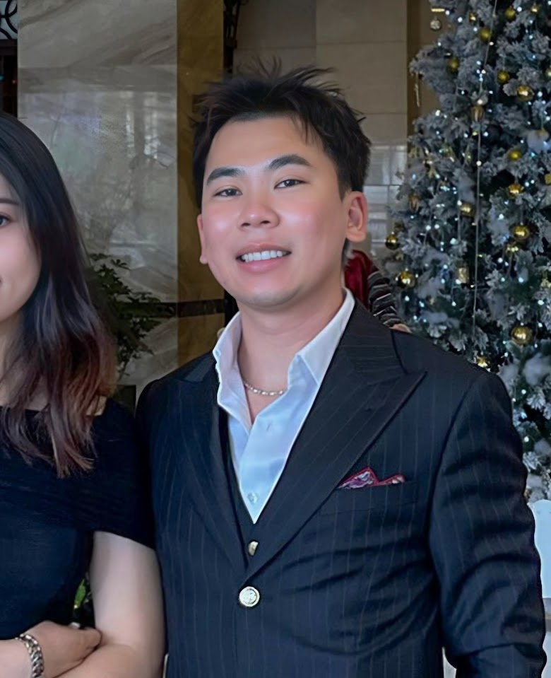

San Francisco State University
San Francisco, CABachelor of Science in Computer Science
GPA: 3.64
Full-stack Software Engineer with 2+ years of experience building end-to-end systems that combine business logic, data analytics, and user-focused UX. Engineered ERP tools and automation pipelines that cut manual overhead by 40%, increased LTV by 15%, and improved telemetry observability. Proficient in production-grade stacks (React, Next.js, TypeScript, TailwindCSS, FastAPI, PostgreSQL, Docker). Skilled in API integration (REST/GraphQL, JWT), real-time data sync, and CI/CD tooling (Github Actions, Supabase). Thrive in Agile teams with strong collaboration, feedback-driven iteration, and full lifecycle ownership.
Bachelor of Science in Computer Science
GPA: 3.64OOP, Algorithms, Software Design and Implementation, Database Structures, Full-Stack Web Development, Operating Systems, NLP.
Languages & Frameworks: Python, TypeScript, JavaScript, SQL, HTML, CSS, React.js, Next.js, Redux, TanStack Query
Backend & DevOps: Django, FastAPI, Node.js, PostgreSQL, Supabase, RESTful APIs, GraphQL, JWT, Docker, Kubernetes, Github Actions, Webpack, NPM scripts
Systems & Architecture: CI/CD, Microservices, ETL Pipelines, Component-Based Architecture, Design Systems, RAG, AI Tooling, PaaS/SaaS integration
Testing, Monitoring & Performance: Unit Testing, Integration Testing, Linting, Code Coverage, Datadog, Lighthouse, A11Y Standards, Lazy Loading, Bundle Optimization
Product & Collaboration: ERP Systems, CRM Automation, Agile/Scrum, JIRA, Internal Tooling, Ownership Mindset, Cross-Functional Collaboration, Mentorship
Kim Tin Jewelry
Oakland, CAAAA – The Auto Club of Southern California
Costa Mesa, CA